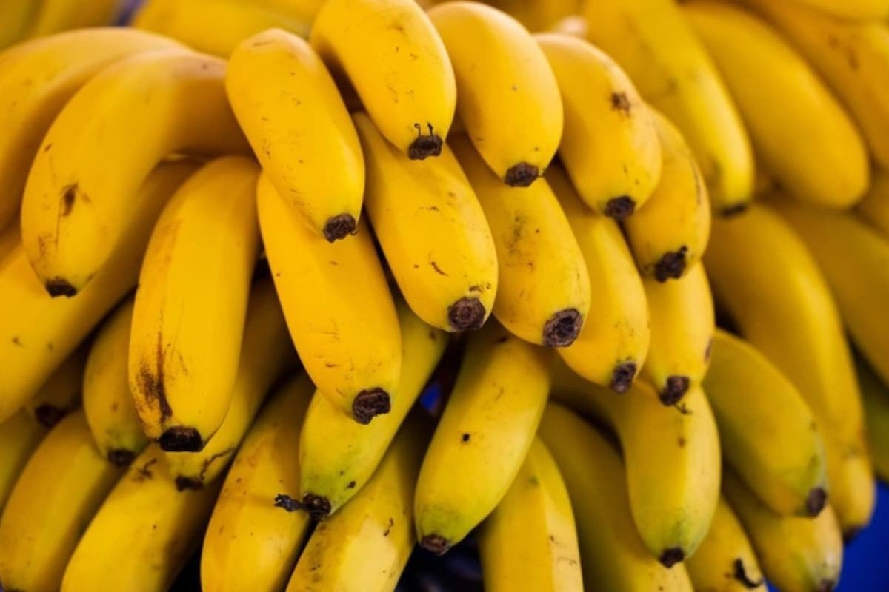

Banana editada com CRISPR demora mais a escurecer e já tem aval no Brasil
Variedade da britânica Tropic reduz a enzima PPO; empresa diz ter autorização para vender no Brasil, no Japão e nas Filipinas.

A empresa britânica de biotecnologia agrícola Tropic desenvolveu uma banana que demora mais a escurecer depois de descascada ou cortada, mantendo sabor e textura, segundo reportagem do g1 com base em declarações ao The Guardian. O diretor-executivo Gilad Gershon diz que a polpa resiste pelo menos um ou dois dias a mais, e ainda mais sob refrigeração.
O escurecimento é causado pela enzima polifenol oxidase (PPO), ativada em contato com o oxigênio. Com a ferramenta CRISPR-Cas9, os cientistas reduziram drasticamente a produção dessa enzima sem introduzir DNA de outras espécies.
A ideia é facilitar o uso da fruta em produtos pré-embalados e reduzir o desperdício: um estudo do governo britânico de 2017 apontou que 1,4 milhão de bananas próprias para consumo iam para o lixo por dia no país. O Defra classificou a banana como “variedade melhorada com precisão”, mas ela ainda passará pela Agência de Padrões Alimentares antes de chegar aos mercados britânicos.
Gershon afirmou que a empresa já obteve autorização para comercializar o produto no Brasil, no Japão e nas Filipinas.